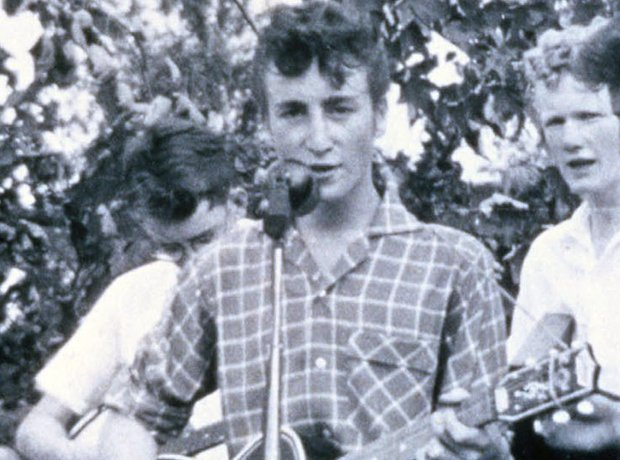

John Conoce a Paul
1957

En 1957 John Lennon daria un pequeño concierto en un festival que habia en Liverpool, el cual era con su banda de Skiffle que tenia con unos amigos de la escuela, la cual se llamaba "The Quarrymen" el nombre se debe a que ellos estaban en una escuela llamada "QuarryBank", a ese concierto iba a asistir
Ivan Vaughan, el cual era amigo de John Lennon, pero no solo venia el, invito a Paul McCartney el cual tambien era su amigo.
"Al fondo había una especie de pequeño escenario en la cual tocaban unos muchachos. Me fijé particularmente en uno de ellos con una camisa escocesa a cuadros, pelo rizado rubio y patillas que tenía muy buena pinta. Estaba tocando una guitarra no muy buena, de esas garantizadas para no quebrarse. Aun así, lo hacía bastante bien, recuerdo que me dejó impresionado”.
-Paul McCartney en una entrevista.